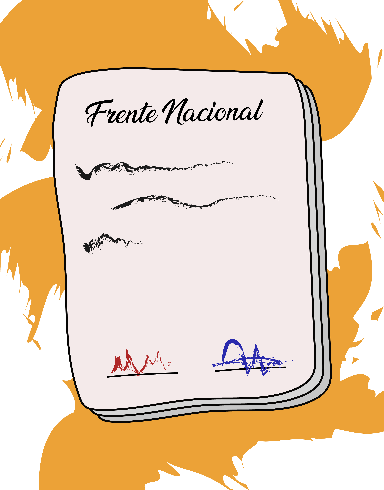

La violencia en Colombia
Línea de tiempo. Estudiantes de Grado 10. REGRESAR AL INICIO
REGRESAR AL INICIO
EL INICIO DE LA
VIOLENCIA
La violencia es el periódico histórico en el cual los partidos Liberal y Conservador se enfrentaron por todo el territorio con episodios extremadamente violentos.
EL BOGOTAZO
Jorge Eliecer Gaitán, convocó a campesinos y obreros a unirse a su movimiento por la mejora de las condiciones laborales y el acceso a vivienda, educación y salud.
LOS CHULAVITA Y LOS
PÁJAROS
Después del asesinato de Jorge Eliecer Gaitán, todo el país se convirtió en caos, pues hasta en la cámara se enfrentaron liberales y conservadores. El presidente Mariano Ospina Pérez trató de recuperar el orden público a través de la represión.
GOLPE DE ESTADO
Durante los años de 1951 y 1952, Colombia vivió un periodo más intenso de violencia. Con el partido conservador dividido y los dirigentes liberales exiliados en el exterior, la sociedad vio necesaria la intervención militar.
FRENTE NACIONAL
Los líderes políticos de ambos partidos iniciaron un movimiento para retomar el poder; apoyados por la insatisfacción de grupos sociales como estudiantes, maestros y la iglesia, además del inconformismo del pueblo, se empieza a gestar el Frente Nacional.
